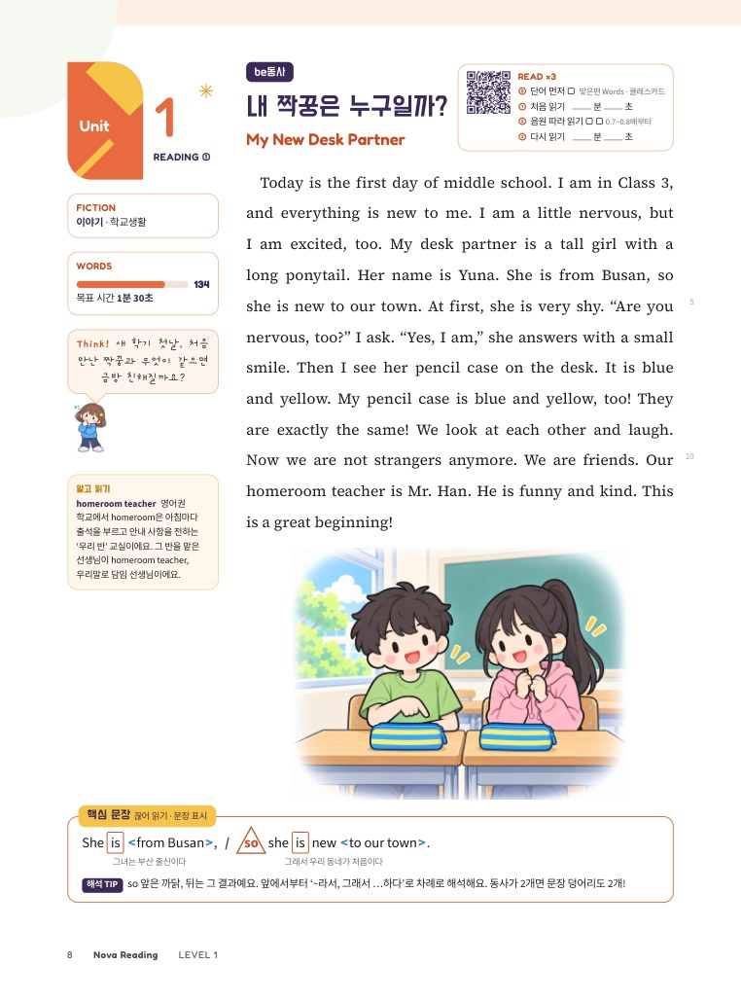
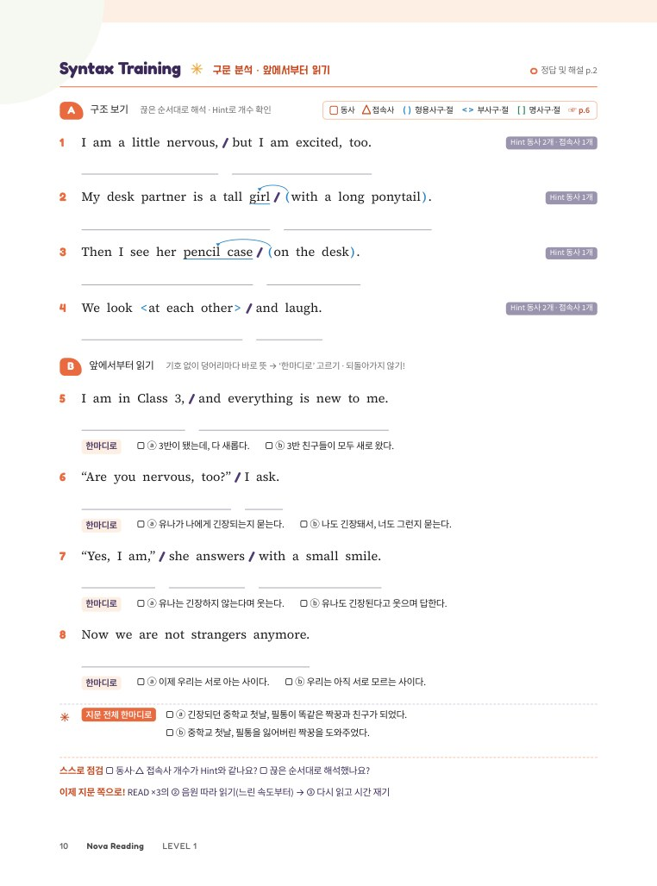
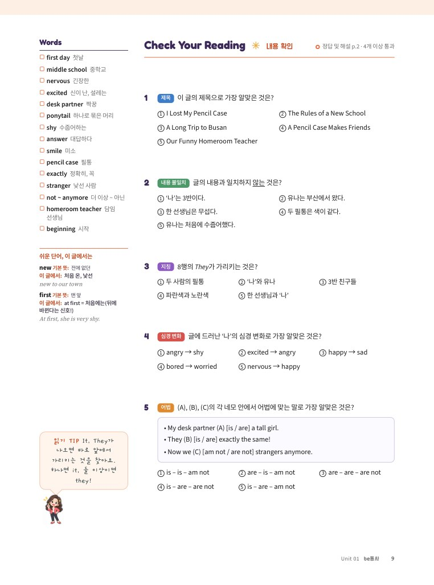
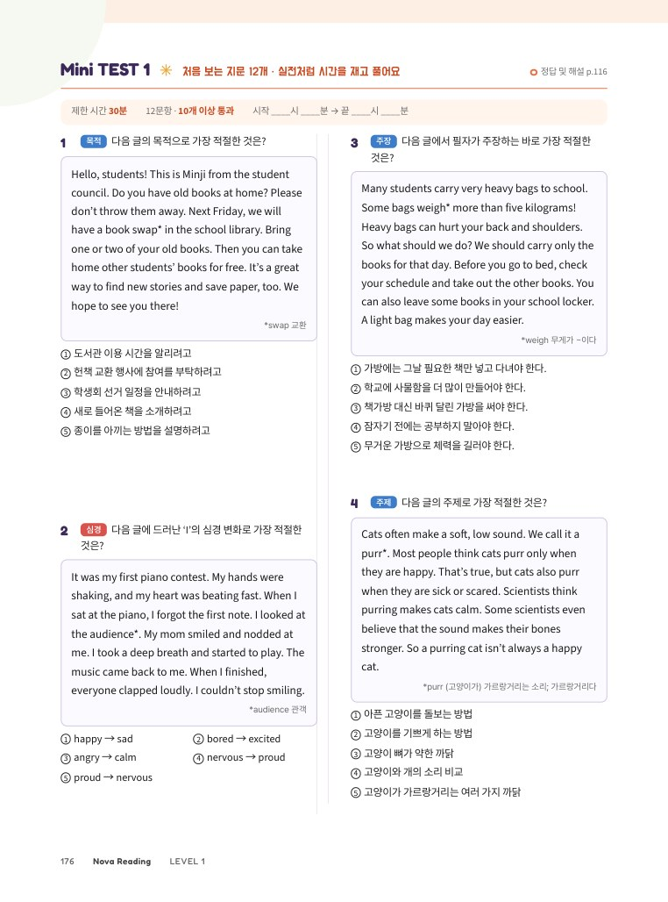

영어 독해 · 구문부터 수능 유형까지
NovaReading
LEVEL1
혼자서도 끝까지! 앞에서부터 읽는 구문 독해
지문 36편 · 수능 유형 문제문장 표시 · 끊어 읽기Mini TEST 2회 · Word List본책 + 워크북 + 상세 해설
Let’s read!앞에서부터 읽는 영어
NOVA ENGLISH본책 · 워크북 · 정답 및 해설
앞에서부터 읽고,
스스로 이해하는 힘
단어 먼저 → 처음 읽기 → 문제 → 구문 표시 → 다시 읽기.
지문 하나 네 쪽의 흐름을 반복하며
긴 문장도 앞에서부터 읽는 습관을 길러요.

1지문 36편, 세 갈래 글
이야기 · 설명문 · 실용문을 Unit마다 하나씩. Nova Grammar LEVEL 1의 같은 Chapter 문법이 지문에 나와요.
2문장 표시와 Syntax Training
□ 동사 · △ 접속사 · ( ) < > [ ]로 구조를 보고, 표시를 줄여 가며 앞에서부터 읽는 3단계 훈련.
3수능 유형 문제 · Mini TEST
주제 · 제목 · 빈칸 · 순서 · 삽입까지 지문마다 5문항, 책 끝 실전 테스트 2회로 실력을 확인해요.
4워크북 · Word List · 상세 해설
학교 시험처럼 바꾼 내신 Test, 지문 속 구절로 외우는 단어장, 흐름 지도와 선택지별 풀이까지.
미리 보기

지문
Syntax Training
Check Your Reading
Mini TEST구성본책 194쪽워크북 24쪽정답 및 해설 119쪽Word List클래스카드 세트
Nova Reading LEVEL 1Nova Grammar LEVEL 1과 짝